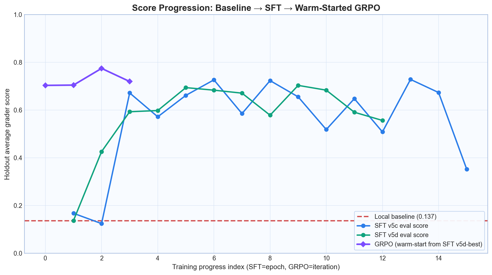
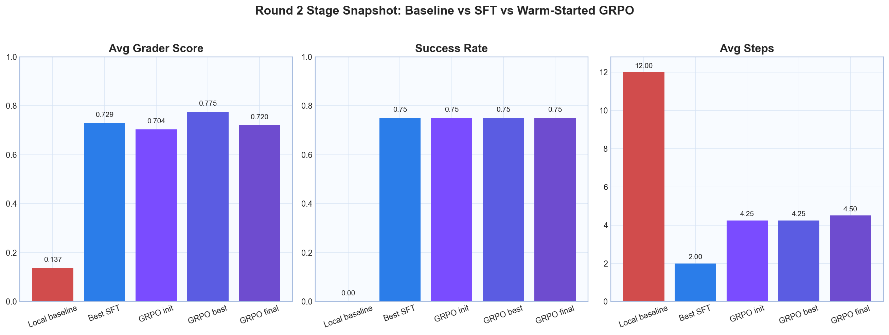
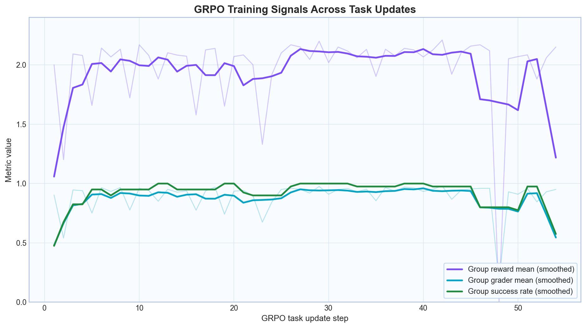
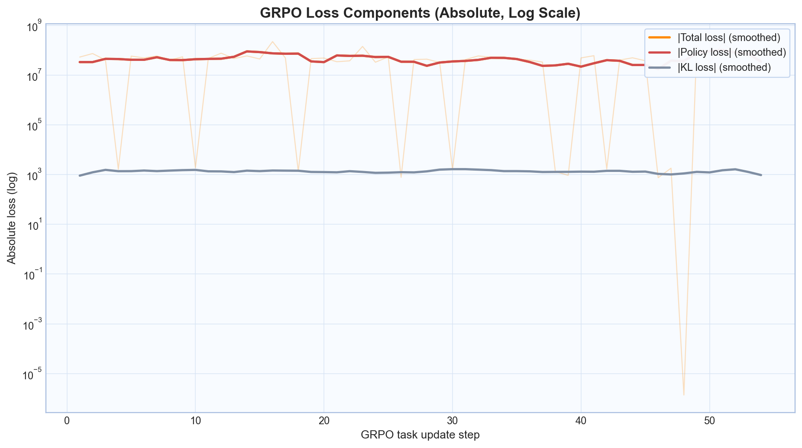

Local baseline score
-
InvoiceGuard is a story-driven AP investigation demo. Follow a case from raw documents, through policy checks, to final resolution and see how training changes behavior.
Switch between cases. Each case shows the evidence packet, policy signal, and how the baseline agent differs from the trained policy.
Tends to investigate repeatedly and timeout at 12 steps.
Investigates quickly, then reaches `submit_final_resolution` in 3-5 steps.
The baseline often investigates without closure. The trained policy learns to collect sufficient evidence and submit a grounded decision in fewer steps.
Step through one representative case per difficulty and see exactly how the trained agent reads documents, uses tools, and lands on the final decision.
Reads:
Tool:
This is the full journey from local baseline to submit-focused SFT and then warm-started GRPO. The best GRPO checkpoint appears at iteration 2.



